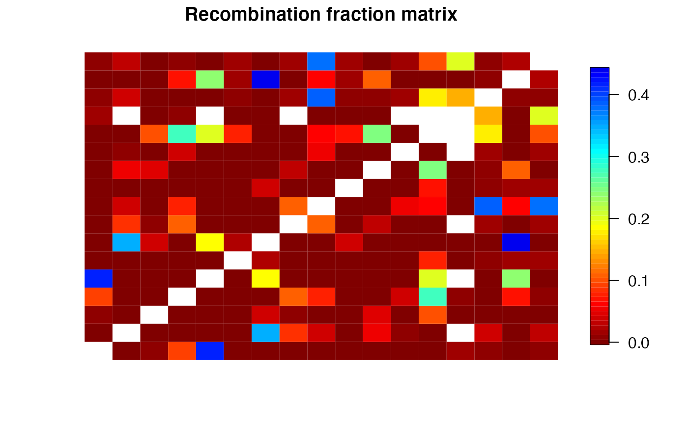
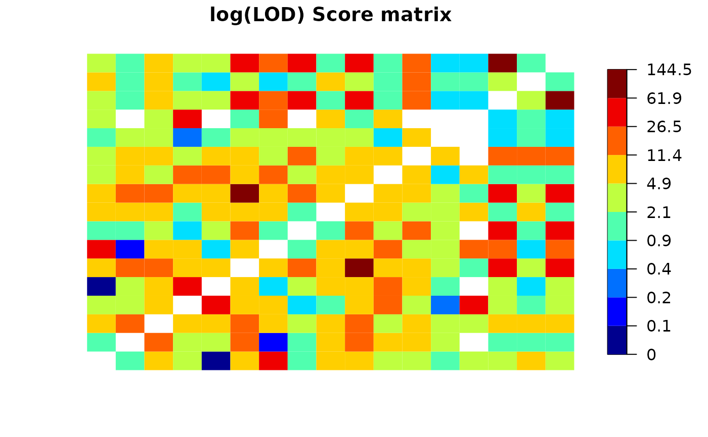

Transforms the recombination fraction list contained in an object
of class mappoly.twopt or mappoly.twopt2 into a recombination
fraction matrix
rf_list_to_matrix(
input.twopt,
thresh.LOD.ph = 0,
thresh.LOD.rf = 0,
thresh.rf = 0.5,
ncpus = 1L,
shared.alleles = FALSE,
verbose = TRUE
)
# S3 method for mappoly.rf.matrix
print(x, ...)
# S3 method for mappoly.rf.matrix
plot(
x,
type = c("rf", "lod"),
ord = NULL,
rem = NULL,
main.text = NULL,
index = FALSE,
fact = 1,
...
)an object of class mappoly.twopt or mappoly.twopt2
LOD score threshold for linkage phase configurations (default = 0)
LOD score threshold for recombination fractions (default = 0)
the threshold used for recombination fraction filtering (default = 0.5)
number of parallel processes (i.e. cores) to spawn (default = 1)
if TRUE, computes two matrices (for both parents) indicating
the number of homologues that share alleles (default = FALSE)
if TRUE (default), current progress is shown; if
FALSE, no output is produced
an object of class mappoly.rf.matrix
currently ignored
type of matrix that should be printed. Can be one of the
following: "rf", for recombination fraction or "lod"
for LOD Score
the order in which the markers should be plotted (default = NULL)
which markers should be removed from the heatmap (default = NULL)
a character string as the title of the heatmap (default = NULL)
logical should the name of the markers be printed in the
diagonal of the heatmap? (default = FALSE)
positive integer. factor expressed as number of cells to be aggregated (default = 1, no aggregation)
A list containing two matrices. The first one contains the filtered recombination fraction and the second one contains the information matrix
thresh_LOD_ph should be set in order to only select
recombination fractions that have LOD scores associated to the
linkage phase configuration higher than thresh_LOD_ph
when compared to the second most likely linkage phase configuration.
Mollinari, M., and Garcia, A. A. F. (2019) Linkage analysis and haplotype phasing in experimental autopolyploid populations with high ploidy level using hidden Markov models, _G3: Genes, Genomes, Genetics_. doi:10.1534/g3.119.400378
all.mrk <- make_seq_mappoly(hexafake, 1:20)
red.mrk <- elim_redundant(all.mrk)
unique.mrks <- make_seq_mappoly(red.mrk)
all.pairs <- est_pairwise_rf(input.seq = unique.mrks,
ncpus = 1,
verbose = TRUE)
#> INFO: Going singlemode. Using one CPU for calculation.
## Full recombination fraction matrix
mat.full <- rf_list_to_matrix(input.twopt = all.pairs)
#> INFO: Going singlemode. Using one CPU.
plot(mat.full)

plot(mat.full, type = "lod")
